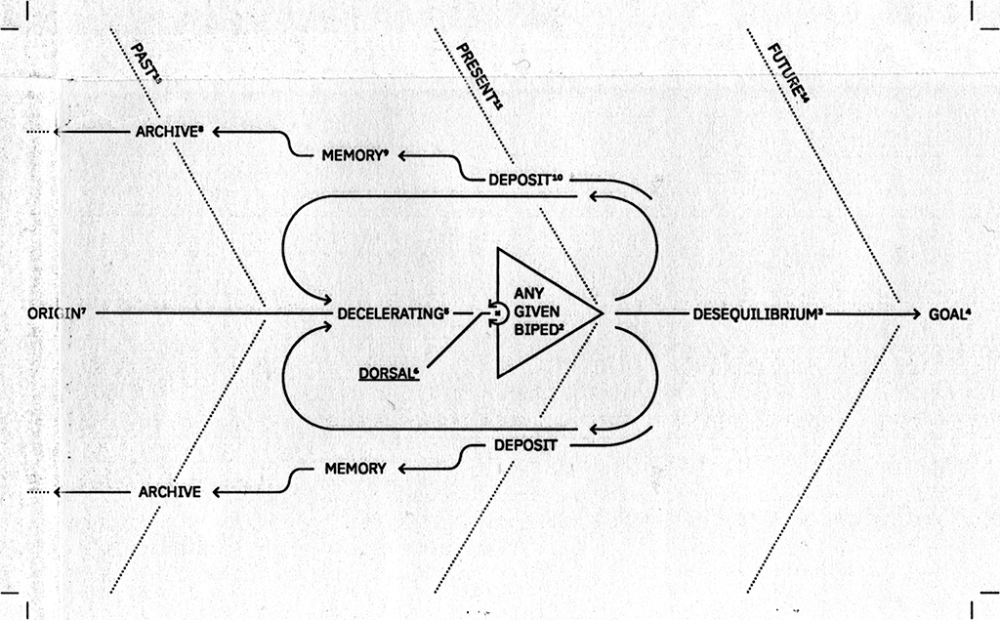
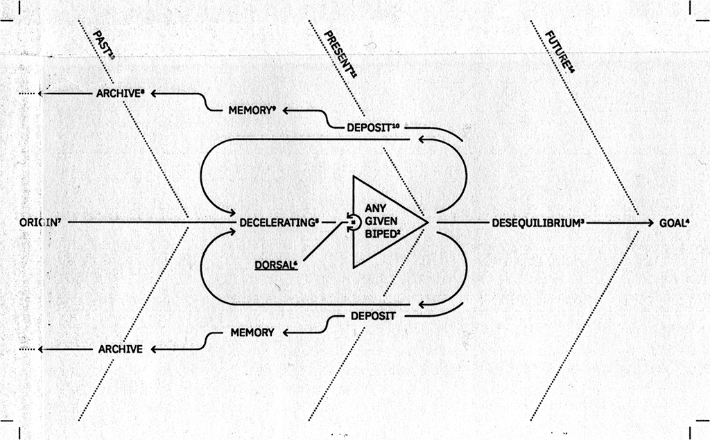

The Dorsal Map: Mit "Technologie" in Richtung Zukunft navigieren — was bedeutet das überhaupt? Ausgehend von einer Antwort auf Dr. Annika Haas' Seminar, "Whose Technology?" (2023-24), und "Dorsality" von David Wills (2008), versucht diese Karte Teile seiner Begriffsinterpretation der "Technologie" darzustellen und nachzuvollziehen.
Sie zeigt Beziehungen und Ausrichtungen zwischen besonders hervortretenden Wörtern des Textes und soll ihre Bedeutung dadurch sichtbar machen. Das Diagramm geht letztendlich über das Individuum hinaus und visualisiert die Anwendung von Wills' Interpretation auf zwischenmenschlicher Ebene: Ablagerungen in der Gegenwart, die, in die Vergangenheit übergehend, zu Erinnerungen und schließlich zu Archiven werden, kreisen in der Gegenwart anderer Zweibeiner und beschleunigen deren zielgerichtete Vorwärtsbewegung. So verbindet sich die eigene Gegenwart mit der Vergangenheit anderer, und anderer Gegenwart mit der eigenen Vergangenheit. Die Visualisierung soll diese miteinander verwobenen Einflüsse zeigen.
The Dorsal Map: Navigating towards future goals through 'technology', and what even does that mean? Exploring further, from an initial response to Dr. Annika Haas' seminar, 'Whose Technology?' (2023-24), and 'Dorsality' by David Wills (2008), this is a map to present and comprehend parts of his interpretation of the term 'technology'.
It shows relations and alignments amongst imposing words of the text, so their meaning may become visible. Starting from this, the diagram even exceeds the layer of the individual and visualises the application of Wills' interpretation interpersonally: Deposits at the present that, crossing over in the past, become memories and, finally archives, will revolve in the present of other given biped, accelerating their forward movements towards their future goals. So ones present connects to others' past, and others' present ones past. The visual shall show this interwoven influences.
Schwarz-Weiß Laserdruck auf C4 Briefumschlag, 19,7 x 19,8 cm
Black and white laser print on C4 envelope, 7.8 x 7.8 in
 
